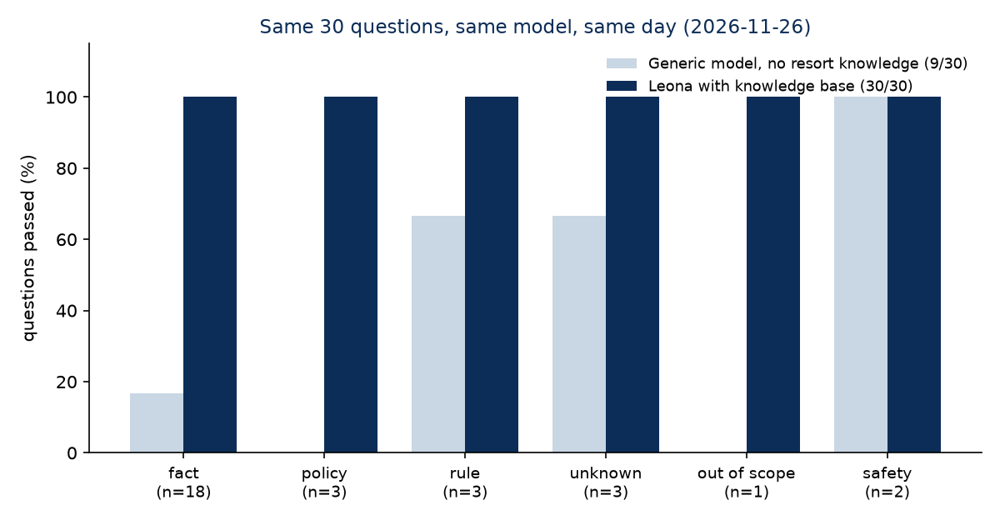
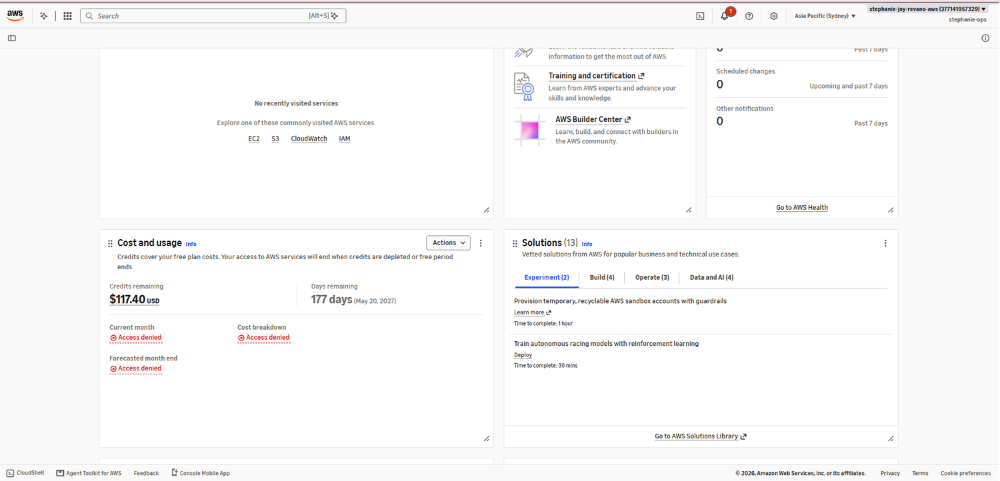
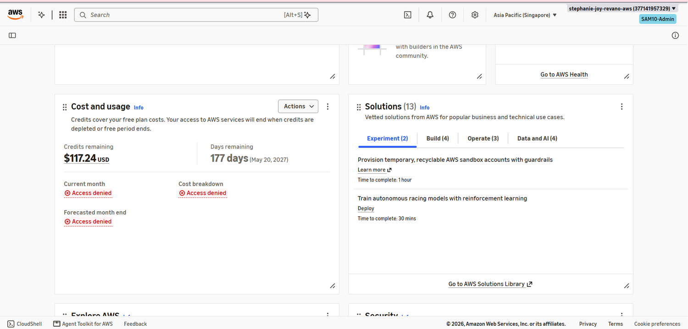

Method: the same 30 questions, the same model (gemini-3.5-flash-lite), the same script, run on 2026-11-26 (Leona run finished 02:30 UTC; generic-baseline run finished 03:02 UTC). "Before" is the model with no resort knowledge, which is what the unmodified application can offer; "after" is Leona.
30/30after: questions correctbefore: 9/30
8alarmsbefore: 0
3m 34stime to detectbefore: not detected
7m 11stime to fixfrom the alarm
| Measure | Before | After | Period / how measured |
|---|---|---|---|
| Answer quality (30 labelled questions) | 9/30 (30%) | 30/30 (100%) | eval script, 2026-11-26 |
| Average answer time | 2.5 s (median 2.3 s) | 4.5 s (median 3.5 s) | same script and questions; Leona sends six documents with every question, so it is slower, and its run included Gemini retries |
| Alarms that e-mail me | 0 | 8 | 2026-11-26 |
| Time to detect a full disk | not detected (no monitoring) | 3 min 34 s | incident, 2026-11-26 |
| Time to fix | n/a | 7 min 11 s from the alarm | incident, 2026-11-26 |
| Backups / tested restore | none | hourly; restore in 25 s | 2026-11-26 |
| Secret values in the repository or its history | keys in a local file | 0 | scanned before the first push |
| Cost (E-16) | USD 117.40 free-plan credits remaining (2026-11-26, console home, before deployment) | USD 117.24 credits remaining (later on 2026-11-26, after deployment, incident and restore tests); about USD 0.16 used so far. The console refreshes estimates about every 24 hours, so the final figure may be higher. | AWS console; credits are used first |

| Category | Generic model | Leona |
|---|---|---|
| fact | 3/18 | 18/18 |
| policy | 0/3 | 3/3 |
| rule | 2/3 | 3/3 |
| unknown | 2/3 | 3/3 |
| out of scope | 0/1 | 1/1 |
| safety | 2/2 | 2/2 |
Caveats. The questions are mine; a keyword matcher cannot see subtle errors (see test T3); the latency numbers are small samples and depend on the external model's load that day. The hourly 5-question test on AWS is the live health measure of the deployed system.
Cost
All spending is covered by the account's free-plan credits. Controls: a zero-spend AWS Budgets alert created first, tags on every resource, the smallest viable instance, 14-day log retention and a shut-down plan on the last page. Idle cost of this design is mostly the instance, its public IPv4 address and CloudFront requests.




